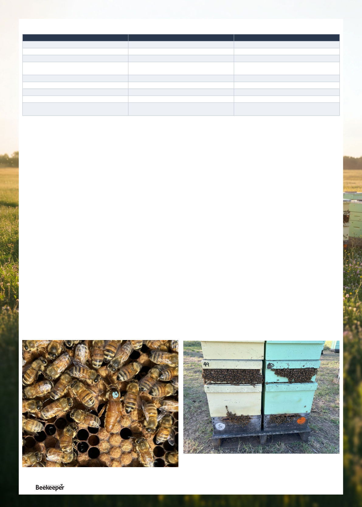

Temperatures
Formic Pro can only be applied with an outside temper-
ature range of 10-29.5°C. The first three days of treatment
with Formic Pro are the most critical that temperatures stay
between 10-29.5°C.
In June 2024 the temperatures ranged between min: 5.7 –
12.8°C and max: 17.2- 19.9°C during the day. In February the
temperatures ranged between min: 10.8 – 22.5°C and max: 24.2
and 36.8°C. Noting that the 36.8°C was on the last day before
the formic treatment was being removed.
Lost queens
We assessed all colonies for their queen presence (all marked
and clipped) before and after applying Formic Pro and Bayvarol
treatments (Figure 1). No queens were lost during either treat-
ment. In the case of Formic Pro treated hives, this was the case
for both June 2024 and February 2025. However, the queens
stopped laying for a few days after applying Formic Pro treat-
ments, which we could tell by the age of the brood. Queens
were laying well again after the initial few days.
Queen age
Jun 2024: 18 months
Feb 2025: 6 – 14 months
Dead bees
Beekeepers have previously reported piles of dead bees at
the entrance of hives post formic acid treatments. We did not
observe any more dead bees than you would normally see at
the hive entrance. The bees however immediately responded
to the formic acid once placed inside the hive, by increasing
their fanning behaviour and bees were seen bearding at the
front of the hive (Figure 2, 3).
All hives treated with Bayvarol showed up with zero mites
in an alcohol wash eight weeks later (max. treatment period).
A note on re-queening
Beekeepers have been asking about the re-queening suc-
cess during or after treatment. From overseas experience, syn-
thetic treatments are much safer when it comes to re-queening
success during treatment. In either case, it’s better to avoid
re-queening (when possible) while treating hives for mites.
During the trial in February 2025 we re-queened some
Formic Pro treated hives straight after the pads were removed
with 100% success in poor weather conditions (overcast and
drizzly). At the same time some of the Bayvarol hives were
requeened (three weeks into the treatment) with all queens
being accepted.
The caveat with synthetics vs non-synthetics
Synthetic chemicals are ‘easy’ to use. At least for now, they
are highly effective against mites and once applied, you ‘just’
need to keep an eye on your calendar for when they need to
be taken out again. They also provide an extended treatment
period of a minimum of two brood cycles (6 weeks). Over time
however, they are the first chemicals that mites can build up
resistance to for various reasons and their effectiveness dimin-
• Table 2. Treatment outcome of Formic Pro over two points in time.
JUNE 2024
FEBRUARY 2025
No. of hives treated
7
24
No. of hives mites reduced
7/7
14/24
Mite count (range) before treatment
5 - 15
3 - 36
Average mite count/alcohol wash before
treatment
9
19
Recommended mite threshold
6 +
9 +
Mite reduction across all hives
41%
8%
Mite reduction when treatment worked
41%
32%
Mite count (range) after treatment
2 - 8
6 - 41
Average mite count/ alcohol wash after
treatment
5
17.5
• Figure 1.
• Figure 2. Bees bearding at the hive entrance. Note: These hives
have ventilated bottom board pollen traps, which were blocked
off with a vinyl mat during treatment.
26 |
| Vol. 127 | No. 4